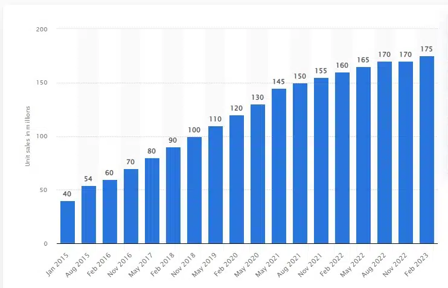

Grand Theft Auto V (GTA 5)
Aqui vamos recapitular a história de GTA V, falar de seus diversos ports, sobre o sucesso de seu componente online e tentar fazer algumas previsões, quem sabe, para o futuro da série.
Os números
Se vou ficar falando do sucesso de GTA V neste artigo, é importante começar colocando em dados concretos o que toda essa popularidade significa. Então vamos a alguns dados, começando por um que já trouxe em outro artigo:
GTA V conquistou em fevereiro deste ano o total de 175 milhões de unidades distribuídas, ao longo de seus quase 10 anos de história. Isso faz o game ser o segundo mais vendido do mundo, ficando atrás apenas de Minecraft, que vendeu 238 milhões.
Mas apenas o número de unidades vendidas não é suficiente para pintar a história de sucesso de um jogo. Também vale mencionar que o game mantém uma média de 92 no site OpenCritic e de 97 no Metacritic para o PS3, onde foi originalmente lançado. E suas boas reviews se refletiram em prêmios.
GTA V foi indicado em nove categorias do BAFTA 2014, das quais venceu três, incluindo melhor jogo britânico. O game também levou três prêmios no Golden Joystick Awards e mais dois na GDC. O “falecido” Spike Video Game Awards também concedeu três honrarias ao jogo, o que inclui o famoso GOTY.
E o sucesso do título também tem sido constante entre os streamers e criadores de conteúdo. De acordo com a Forbes, em 2022, com nove anos de idade, GTA V ainda foi o game com mais horas assistidas em plataformas de streaming ao redor do mundo:
- Grand Theft Auto V (1,82 bilhões)
- League of Legends (1,77 bilhões)
- Valorant (1,3 bilhões)
- Apex Legends (845,3 milhões)
- Minecraft (795,4 milhões)
- Counter-Strike: Global Offensive (768,5 milhões)
- Fortnite (738,5 milhões)
- Dota 2 (653,5 milhões)
- Mobile Legends: Bang Bang (572,8 milhões)
- Call of Duty: Warzone (559,3 milhões)
A título de curiosidade: no exato momento em que estou escrevendo este artigo, GTA V é o terceiro jogo sendo mais assistido no YouTube, na frente de Minecraft e atrás somente de novidades: Overwatch 2 e Star Wars Jedi: Survivor. Na Steam, o game é o sétimo entre os mais jogados.
A história do GTA V
GTA V nunca foi um “azarão” - um game inesperado que conquista o coração do público de surpresa. Na verdade, tratava-se de um novo lançamento em uma das franquias mais rentáveis do mundo, que já contava com mais de dez títulos lançados antes dele. A Rockstar apostou pesado no sucesso do game que seria lançado em 2013. E quando digo “pesado”, quero dizer pesado mesmo.
Estima-se que GTA V foi o game mais caro já feito na época de seu lançamento. Infelizmente não temos números oficiais, mas as especulações de profissionais da área chegaram a uma estimativa de aproximadamente US$ 265 milhões para o desenvolvimento e marketing do jogo.
Em comparação, o segundo jogo mais caro até aquele momento foi Star Wars: The Old Republic, com um investimento de US$ 200 milhões. GTA 4, em comparação, teria custado US$ 100 milhões.
Para se ter uma noção melhor ainda do absurdo desse número, o primeiro Avatar chamou demais a atenção pelo seu imenso custo de produção, sendo que precisou de US$ 237 milhões para ser feito. Hoje, 10 anos depois, o único game que bate GTA V com números oficiais é Cyberpunk 2077, que custou um total de US$ 316 milhões em sua produção.
Os executivos falam da quantidade de pessoas trabalhando no jogo – reflexo de seu enorme investimento – e da preferência da Rockstar em fazer sua equipe trabalhar em todos os jogos que saem pela produtora. Assim, o know-how está em constante evolução, passando de um título para o próximo:
É assim que a gente trabalha – todo mundo trabalha no GTA, ou Red Dead, e por aí vai, e depois nos movemos para a próxima coisa”, disse Benzies. “Agora que são necessárias mil pessoas para fazer um jogo, isso é um requisito. Mas nós não queremos mil pessoas num lugar só.
Neste momento, o entrevistador interrompe e pergunta: “São mil pessoas fazendo GTA V?” ao que Benzies responde: “São provavelmente mais, muito mais”.